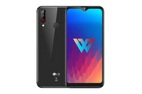

역사
스마트폰은 PC와 같은 기능과 더불어 고급 기능을 제공하는 휴대 전화이다. 응용 프로그램 개발자에게는 표준화된 인터페이스와 플랫폼을 제공하여 완전한 운영 체제 소프트웨어를 실행하는 전화일 것이고, 다수의 일반인에게는 전자 우편·인터넷·전자책 읽기 기능·내장형 키보드·외장 USB 키보드·mini-HDMI 단자 등을 갖춘 고급 기능이 있는 전화로 비칠 수 있다. 다시 말해 스마트폰은 전화 기능이 있는 소형 컴퓨터라 볼 수 있다.
스마트폰은 컴퓨터를 결합한 무선 휴대전화기이다. PC에서 실행되는 운영체제보다 작게 만든 모바일 운영체제를 탑재하여 인터넷 검색, 전자우편, 간단한 문서 편집, 카메라, 오디오 및 비디오 재생 등 PC의 기능을 거의 모두 갖추고 있다.
스마트폰은 PC와 같은 기능과 더불어 고급 기능을 제공하는 휴대 전화이다. 응용 프로그램 개발자에게는 표준화된 인터페이스와 플랫폼을 제공하여 완전한 운영 체제 소프트웨어를 실행하는 전화일 것이고, 다수의 일반인에게는 전자 우편·인터넷·전자책 읽기 기능·내장형 키보드·외장 USB 키보드·mini-HDMI 단자 등을 갖춘 고급 기능이 있는 전화로 비칠 수 있다. 다시 말해 스마트폰은 전화 기능이 있는 소형 컴퓨터라 볼 수 있다.
안드로이드(영어: Android)는 휴대 전화를 비롯한 휴대용 장치를 위한 운영 체제와 미들웨어, 사용자 인터페이스 그리고 표준 응용 프로그램(웹 브라우저, 이메일 클라이언트, 단문 메시지 서비스(SMS), 멀티미디어 메시지 서비스(MMS)등)을 포함하고 있는 소프트웨어 스택이자 모바일 운영체제이다. 안드로이드는 개발자들이 자바 와 코틀린 언어로 응용 프로그램을 작성할 수 있게 하였으며, 컴파일된 바이트코드를 구동할 수 있는 런타임 라이브러리를 제공한다. 또한 안드로이드 소프트웨어 개발 키트(SDK)를 통해 응용 프로그램을 개발하는 데 필요한 각종 도구와 응용 프로그램 인터페이스(API)를 제공한다.
아이폰은 미국, 중국, 대한민국, 베트남, 필리핀, 독일 등을 비롯해 전 세계적으로 선풍적인 인기를 끌었다. 아이폰이 처음 출시된 2007년 이후 2011년 2월 1억대 판매를 돌파, 2012년 초 2억대 판매, 2012년 말까지 3억대 이상 판매되었다. 2013년 4월 4억대 판매, 2014년 3월 5억대를 판매하며 1억대 판매에 걸리는 시간이 점점 짧아지고 있다. 2014년 아이폰6가 출시되면 6억대 판매 돌파는 무난하다고 전망된다. 2016년 기준으로 아이폰 판매량은 1년 전보다 16% 감소한 5119만대에 그쳤다.
 |
 |